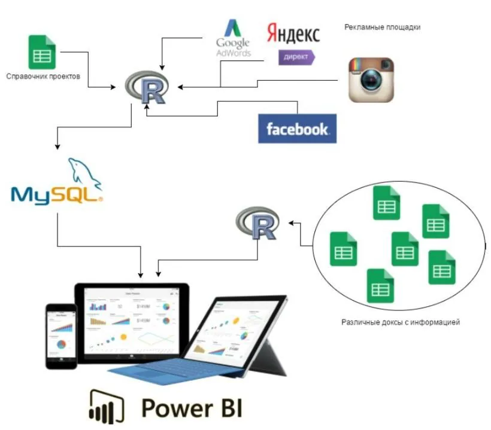
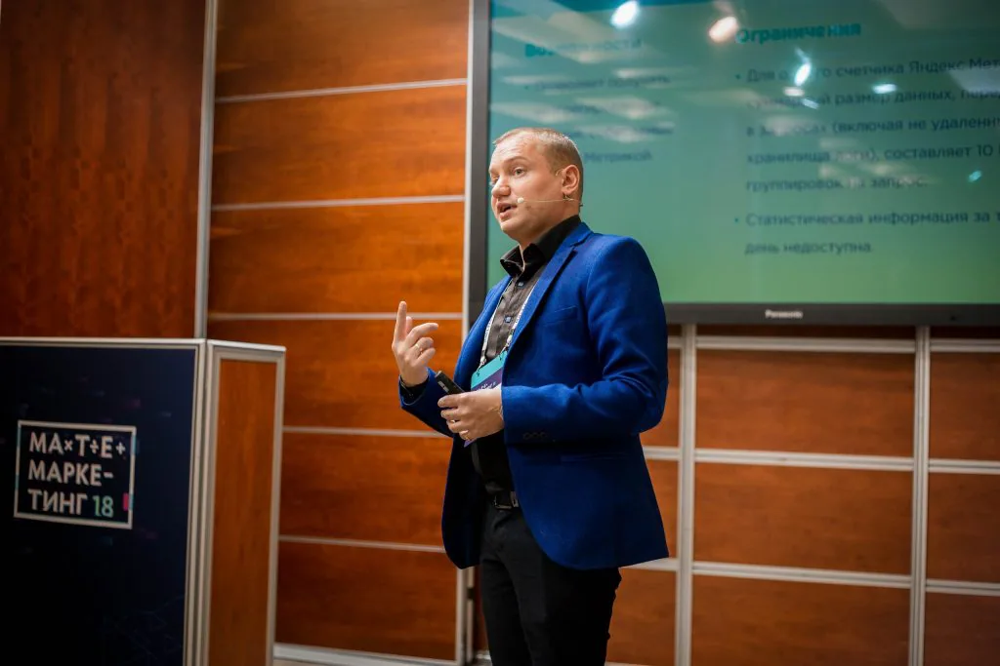

Язык R для аналитиков и интернет-маркетологов
Попросили руководителя отдела аналитики Netpeak, Алексея Селезнёва, рассказать про применение языка R в аналитике и интернет-маркетинге. Алексей является автором специализированных пакетов на R и нескольких курсов.
Следить за видеоуроками и публикациями Алексея на тему R можно в Telegram-канале и YouTube-канале R4marketing.
Алексей, В каких сферах распространен язык R?
За последние лет десять R проник во множество различных отраслей, но наибольшую популярность имеет в биоинформатике, статистике, HR-аналитике и интернет-маркетинге.
Применение R в основном ограничивается областью анализа данных или есть и другие примеры использования данного языка?
R — это язык исследователей, статистиков и аналитиков. Его не принято использовать в продакшене, для разработки веб- или десктопных приложений. Поэтому я соглашусь, на 90% R применяется в анализе и работе с данными, всё остальное скорее экзотика.
Какое место язык R занимает в аналитической архитектуре?
Является её движком. У нас в Netpeak большинство данных собирается именно на R, большая часть исследований также реализуется на этом языке, и движение данных между различными системами в значительной мере написано на нём же.
В работе с данными это отличный язык, с его помощью вы практически от куда угодно можете получить данные, привести их с помощью архитектуры tidyverse к нужному виду и провести полноценный анализ, которым, кстати, можно будет поделиться с коллегами либо в виде PDF-файла, либо построить на базе Shiny интерактивный дашборд.
Применение R в аналитических задачах
Можете привести несколько примеров использования языка R из своей практики, чем они лучше альтернативных решений без использования R?
В качестве примера могу сказать, что именно через R мы собираем данные из огромного количества аккаунтов в таких сервисах, как Google Analytics, Google Ads, Яндекс.Директ, Facebook, MyTarget. После, на основе собранных данных, R ищет аномалии и рассылает информационные дайджесты ответственным специалистам и руководителям.

Публикация Алексея Селезнёва в корпоративном блоге Netpeak
Ещё один пример, это Telegram-бот, который контролирует выполнение всех задач на нашем аналитическом сервере, в случае любого сбоя мы получаем уведомление и можем оперативно отреагировать.
По поводу альтернатив, у R уже сформировано большое и активное сообщество, которое ежедневно пишет и публикует новые пакеты, расширяющие базовые возможности языка. Сегодня почти под любую задачу можно найти пакет, который значительно ускорит решение вашей задачи. Пакеты бывают совершенно разные: какие-то являются коннекторами для загрузки данных из различных источников, в том числе из API, другие направлены на построение моделей машинного обучения, третьи — на визуализацию данных.
К Excel многие привыкли, но на сегодня он, во-первых, уступает по функционалу языкам программирования, во-вторых, уступает по скорости, и к тому же он очень сильно ограничен в объёме данных, которые способен обрабатывать. Полноценной альтернативой может служить Python. В интернете множество бесполезных споров, о том какой из них лучше, но тут скорее дело привычки и вкуса.
R как аналитический навык
Какие преимущества дает язык R? Сейчас это обязательный навык или дополнительный, который позволит лучше конкурировать на рынке труда?
Судя по вакансиям аналитиков, можно сказать, что знание R или Python для них в скором времени станет обязательным. Для маркетолога знание языков программирования будет являться плюсом. Программирование даст маркетологу преимущество на рынке труда, так как он многие задачи сможет решать самостоятельно.
В любом навыке можно совершенствоваться до бесконечности. Какой уровень владения языком R будет достаточным для аналитика?
Сложный вопрос, как минимум есть некоторые обязательные знания, это:
- Основные программные конструкции (циклы и условные конструкции IF).
- Умение работать со строками (в базовом синтаксисе, либо с помощью пакета stringr или stringi).
- Умение манипулировать данными. Тут сообщество разделилось на два лагеря, кому-то нравится библиотека tidyverse, кому-то data.table. Знать надо хотя бы одну.
- Уметь получать данные из тех источников, с которыми работаете, минимально это CSV / Ecxel-файлы, базы данных, и API сервисов, используемых в работе.
- Взаимодействовать с базами данных, то есть не только читать, но и записывать, манипулировать данными в них.
- Уметь визуализировать данные с помощью пакета ggplot2.
- Работать с датами и временем (в базовом синтаксисе, либо с помощью пакета lubridate).
Когда у вас есть такой набор навыков, вы можете считать, что владеете R. Дальше уже идут более узконаправленные возможности языка, которые зависят от вашей сферы деятельности.
Вы известны в качестве популяризатора языка R, но сами начали применять Python. Расскажите, зачем он вам, столкнулись ли вы с ограничениями в R?

Выступление Алексея на конференции Матемаркетинг с докладом про R в интернет-маркетинге
R по прежнему остаётся моим основным и любимым рабочим инструментом, но мы работаем в такой отрасли, где процесс обучения должен быть непрерывным. На самом деле, когда я уже довольно уверенно владел R, я неоднократно делал попытки изучить и Python. Но как-то долго мне в работе не попадалась подходящая задача, которую я бы не мог реализовать на R. И вот в прошлом году такая задача появилась, её суть была в расшифровке данных: некоторые данные в нашей самописной CRM-системе зашифрованы с помощью PHP. Расшифровать их через R было либо невозможно, либо очень сложно, а на Python была аналогичная библиотека.
На самом деле оба языка хорошие, и сейчас я активно изучаю и использую Python, и споры о том, какой из них лучше считаю совершенно бесполезными.
Изучение языка R
Стоит ли начинать карьеру аналитика с изучения языка R или к нему лучше подходить позже? В какой момент целесообразно его изучать?
В плане инструментов у меня был такой путь: Excel -> SQL -> Power BI -> R -> Python. Но Python не заменил мне R, просто это ещё один инструмент в моём арсенале. Вообще я считаю Excel азбукой в работе с данными, и как раз начинать всё-таки рекомендую с него. Сначала разберите сводные таблицы Excel, так вы поймёте принцип работы с данными, и изучать другие инструменты будет уже гораздо проще.
Какие курсы или книги по языку R вы порекомендуете новичкам?
Необходимую стартовую базу можно получить из моего бесплатного курса «Язык R для пользователей Excel», его я старался сделать идеальным для вхождения в этот язык.
Далее, всеми любимые курсы на Stepik, сначала стоит пройти «Основы программирования на R», потом две части курса «Анализ данных в R».
По поводу книг, очень рекомендую «Язык R в задачах науки о данных» Хедли Викхема и Гарретта Гроулмунда. Я сейчас читаю «R. Книга рецептов» Лонг Дж. Д., Титор П., тоже неплохо, и начинается с самых основ.
Если вы занимаетесь интернет-маркетингом, можно почитать методичку к моему курсу «Язык R для интернет-маркетинга», она в открытом доступе, но требует регистрации.
Есть и другие русскоязычные книги, но некоторые не подойдут начинающим, некоторые с большим уклоном в статистику.
Источник: JMS University, 2020. Оригинал больше недоступен — материал восстановлен из архива.Джерело: JMS University, 2020. Оригінал більше недоступний — матеріал відновлено з архіву.Source: JMS University, 2020. The original is no longer online — restored from the archive. Снимок в Web ArchiveЗнімок у Web ArchiveSnapshot in the Web Archive